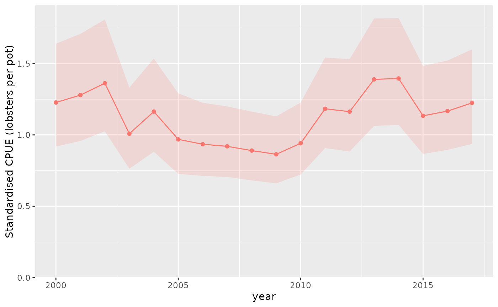

Calculate expected-response indices over the same explicit reference population in every year, or extract the existing year-effect contrasts. No model is fitted or updated by this function.
Usage
cpue_index(
model,
year = NULL,
method = c("standardised", "standardized", "year_effect"),
reference_data = NULL,
reference_weights = NULL,
uncertainty = c("auto", "none"),
probs = c(0.025, 0.975),
rescale = "raw",
ndraws = 1000L,
batch_size = 250L,
draw_batch_size = 100L,
retain = c("summary", "draws"),
units = NULL,
...
)
# S3 method for class 'influ_index'
as.data.frame(x, row.names = NULL, optional = FALSE, ...)
# S3 method for class 'influ_index'
print(x, ...)Arguments
- model
A fitted GLM,
mgcvGAM,glmmTMB, or completebrmsfitfor response standardisation. Formethod = "year_effect", any model supported byinflu()or an existinginflu_diagcan be supplied.- year
Name of the year variable. Defaults to the first formula predictor.
- method
"standardised"(default), its alias"standardized", or"year_effect". The latter is a contrast, not an expected-response index.- reference_data
A non-empty data frame defining a common covariate profile or population, without the year column. Each row is predicted in every observed year. Supply all required predictors and any exposure variables explicitly; use one unit of exposure for a per-unit index.
- reference_weights
Non-negative weights, one per reference row. Defaults to equal weights. These are standardisation weights, not areas.
- uncertainty
"auto"for propagated uncertainty, or"none"for a point-estimate preview with missing uncertainty columns.- probs
Two increasing interval probabilities.
- rescale
"raw"(default), or a positive target geometric mean across all returned years. A common normalisation is applied to each posterior draw; frequentist uncertainty includes the normalising denominator.- ndraws
Maximum number of existing posterior draws to use for brms. Deterministically spaced draw identities are shared across years and batches.
- batch_size
Maximum reference rows predicted together.
- draw_batch_size
Maximum posterior draws predicted together.
- retain
"summary"(default) or"draws". Draw retention is available for standardised brms indices and stores only a draw-by-year matrix.- units
Optional response units, such as
"lobsters per pot".- ...
Arguments passed to
influ()only formethod = "year_effect".- x
An `influ_index` object.
- row.names, optional
Passed to the data-frame method.
Value
An S3 influ_index object containing table, metadata, and optional
draws. as.data.frame() returns the assessment table with Year, Mean,
Median, SD, CV, Qlower, Qupper, Method, Distribution, and Link.
Details
For standardisation, predictions are averaged on the response scale, not averaged on the link scale and then back-transformed. Supplied reference weights are treated as known. Hurdle and zero-inflated fits use the backend's combined expected response, including its zero component. Binomial GLM/glmmTMB predictions are probabilities; brms binomial expected predictions are counts at the supplied number of trials. Supply one trial for comparable per-trial indices. Log-transformed responses are rejected: fit an explicit lognormal model instead of silently exponentiating a fit.
GLMs and GAMs use the delta method and their joint coefficient covariance.
GAM smooths, including random-effect smooths, are evaluated as fitted; the
smoothing-parameter correction is used when available. glmmTMB uses the
joint fitted-parameter covariance and numerical derivatives of native
response predictions, with conditional random effects set to zero. REML
and zero-component random effects are not yet supported for glmmTMB here.
brms uses brms::posterior_epred() with group-level effects set to zero.
Setting a random effect to zero is not integration over its population
distribution. brms smooths and other population-level terms remain present.
Mean is the fitted expected-response estimate for frequentist models,
and the posterior mean of the expected-response index for brms. Median
is a posterior median and is NA for frequentist estimates, rather than
labelling an MLE as a posterior median. SD is the standard error or
posterior standard deviation of the index, not observation dispersion.
CV is SD / Mean when the mean is positive. Positive frequentist indices
have delta-method log-scale intervals; other indices have normal intervals.
These intervals are pointwise, not simultaneous. Preview mode retains the
brms posterior mean, but omits uncertainty summaries; it does not replace
joint predictions with predictions at posterior-mean coefficients.
Working storage is bounded by reference and draw batches plus a compact
annual covariance or draw matrix. Native prediction code can allocate
additional memory. The result does not retain the model or reference data.
Spatial response standardisation and area integration are separate future
adapters; sdmTMB and tinyVAST currently support "year_effect" here.
Year-effect results preserve the original diagnostic estimand and cannot
be rescaled by this function. These indices are not biomass estimates.
Examples
if (requireNamespace("glmmTMB", quietly = TRUE)) {
data(lobsters_per_pot)
fit <- glmmTMB::glmmTMB(lobsters ~ year + depth + (1 | month),
family = glmmTMB::nbinom2(), data = lobsters_per_pot)
index <- cpue_index(fit, year = "year",
reference_data = data.frame(depth = 40), units = "lobsters per pot")
head(as.data.frame(index))
plot_index(index)
}
